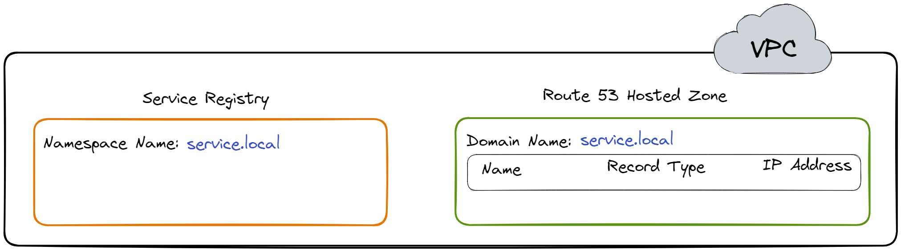

Case Study
1. Introduction
Herald is an observability solution that simplifies deployment of
the ELK stack, a popular set of tools used for monitoring the
health and performance of software systems. It allows software
developers to conveniently collect and explore telemetry data,
including logs, traces, and metrics, through a single,
user-friendly interface.
It may be unclear why small applications need an observability
solution. Smaller apps typically have fewer components and fewer
interactions between those components compared to larger apps. But
as those applications grow in size and complexity, monitoring
their health and performance and diagnosing problems when failures
occur becomes increasingly challenging.

For example, a developer may start by checking logs to diagnose an
issue. In a smaller app, those logs are likely located in a single
place, making it easier to isolate the problem. But in a more
extensive app, the various components may produce their logs in
separate locations. In this case, the developer needs help
locating the source of the error.
That's where observability helps. Observability gives organizations
a holistic picture of the health and performance of their software
systems. As a result, organizations can detect and diagnose issues
much faster than they otherwise would. Observability has become
increasingly popular due to the growing complexity of software
systems and the exponential increase in the number and types of
issues organizations can encounter.[1]
Below we look more deeply into what observability is, why it's
important, and the challenges involved in implementing it. Then we
explore some existing observability solutions. We then take a
closer look at what Herald is and what it does. Finally, we outline
some of the design decisions we made and implementation challenges
we faced in building Herald.
2. Observability
Observability is the ability to understand how a system is
functioning based on its outputs and behaviors. Data is used to
provide a holistic view of a system, allowing developers and
operators to understand how a system is functioning and helping
identify issues that may be impacting its performance.[2]

Observability uses three types of telemetry data, often referred to
as the three pillars of observability: logs, traces, and metrics.[3] This data provides
visibility into a software system and allows development teams to
get to the root cause of various issues to improve performance.
Below we take a closer look at each type of data.
2.1 Logs
Logs are records of events or messages a software application or
system generates. They are typically very detailed and provide
information about a specific event or action within a software
system. Information contained in logs includes:
-
Timestamps: The time at which an event occurred
-
Message content: A description of the event, error, or action
taken
-
Severity level: A classification of the importance or severity
of the event, such as "debug", "info", "warning", or "error"
-
Contextual information: Additional information related to the
event, such as user or device information
By collecting this information, logs provide a record of system
activity that can be used to identify issues, track down bugs, and
gain insights into the behavior and performance of the system.
To further understand the role of logs, it is helpful to delve into
an example of how logs can be used to diagnose and solve issues.
Consider a web application experiencing slow response times and
occasional errors when users try to upload images.
To diagnose the problem, the development team examines the
application's logs. They notice several log messages related to
failed image uploads, which provide error codes and additional
information about the nature of the failures.
Based on this information, the development team can identify
several issues contributing to the slow upload times and error
messages. They find the application's image upload functionality is
not optimized for handling large files and is thus causing slow
response times and occasional failures. Additionally, they discover
users have been trying to upload unsupported file types.
With this information in hand, the development team can make
changes to the application's code and configuration to improve the
performance and stability of the image upload functionality.
2.2 Traces

Tracing is a method of analyzing a software system by collecting
data about the different stages of a request as it passes through
various components or services of the system. It involves creating
a "trace" that includes information about each step of the request.[3]
Each request is assigned a uniquely generated ID. This ID provides
context for the trace, ensuring that specific events that take
place during the request lifecycle are correlated with each other.
The ID is passed from one service to another as the execution of
the request progresses, propagating the context throughout the
request lifecycle.
A trace comprises one or more spans. A span represents a specific
piece of work performed by a specific service within the request
path, such as an HTTP request or a call to a database.[4] Spans contain important
information, such as the start and end times of the work, as well
as any metadata that might be relevant to understanding the span.

The trace can help engineers identify the different services the
request passes through and how they interact with each other. By
analyzing a trace, developers can determine where the request spent
the most time, and which services were involved. This information
can be used to identify performance bottlenecks, optimize the
system, and improve the user experience.
2.3 Metrics

Metrics are like vital signs for a software system. They are a
numeric representation of data measured over intervals of time.
They help developers understand the health of a system. By setting
performance goals and baselines, metrics allow developers to track
whether a system is meeting its targets and catch problems before
they become critical.[3]

There are different types of metrics, including:
-
Resource utilization metrics, such as CPU usage, memory usage,
disk space usage, and network bandwidth usage, measure the number
of resources the system uses.
-
Performance metrics, such as response time, latency, and
throughput, measure the system's responsiveness and how quickly
it processes requests.
-
Error rate metrics, such as the number of errors, exceptions, or
failures within the system, measure the frequency of errors and
help administrators identify areas that need improvement.
-
Availability metrics, such as the percentage of time the system
is up and running, measure the system's uptime and downtime.[5]
Metrics can alert developers to current or potential problems
impacting their systems. Metrics on CPU and memory usage might
indicate that the system's resources are at capacity and may need
to be scaled.

2.4 Integrating Logs, Traces, and Metrics
Logs, traces, and metrics work together to provide developers with
observability of their software systems, allowing them to diagnose
issues and improve system performance. To illustrate how developers
can use logs, traces, and metrics together to diagnose a problem
and help them fix it, let's walk through an example.
Suppose a developer is responsible for a web application that
allows users to purchase items online. Upon checking some metrics
related to the performance of the app, the developer notices that
the average response time and error rate for the app's checkout
page have increased. They suspect there may be an issue causing the
slowdown.
Based on these metrics, the developer uses tracing to follow a
request through the system and pinpoint where a potential issue may
be occurring. They choose a recent transaction that experienced a
slow response time and use a tracing tool to follow the request as
it moved through the system.
The tracing tool shows that the request spent a significant amount
of time in a particular microservice responsible for verifying the
user's payment details. The developer suspects there may be an
issue with this microservice and that further investigation is
required to track down the cause.

In the logs, the developer sees a large number of errors related to
the payment gateway API being used by the microservice. The logs
also show that the payment gateway API has recently changed its
authentication method, which may be causing the errors.
Based on this information, the developer updates the microservice
to use the new authentication method for the payment gateway API.
They deploy the updated microservice to production and monitor the
application's metrics, traces, and logs to verify the issue has
been resolved.
Alone, each pillar of observability provides valuable information
but not a complete picture. The metrics alerted the developer to
the issue, the tracing helped them pinpoint where the issue was
occurring, and the logs provided more detailed information about
the root cause of the issue. By having insight into all three,
developers get complete visibility of their system's health and
performance.[6]
2.5 The Challenge of Implementing Observability
Knowing that observability is important is one thing; making
software systems observable is another. How does a development team
aggregate their telemetry data into a single location in order to
be visualized and analyzed?
The solution to this problem involves solving several smaller
problems. Let's examine each of them.
Collection and Shipment
The first problem that needs to be solved is how to collect the
data. Typically, this is accomplished with a collection agent
installed on each component of the software system that is going to
be observed.

This collection agent is responsible for collecting the data from
the component and shipping it to some central location.
Processing and Transformation
But before the data is shipped to the central location, there is
another problem to solve. At this point, the data is still raw and
unstructured. It will need to be processed and transformed into a
form or structure suitable for a particular analysis. Thus, a data
processor is needed before the data goes anywhere else.

Storage
The next problem concerns the central location. There needs to be
some data storage component that can be queried for the purpose of
visualization and analysis.
This data store should handle the continuous inflow of data and
enable fast and efficient queries for real-time data analysis.
Visualization
The final problem to be solved is how to visualize that data so it
can be gleaned for meaningful insights. What is needed is an
intuitive and easy-to-use UI.

Thus, to achieve observability, a solution is needed that performs
the following four functions: data collection and shipment; data
processing and transformation; data storage; and data visualization.
Next, we look at some of the existing solutions that aim to solve
the observability problem for development teams.
3. Existing Solutions
3.1 Commercial Solutions
Several companies offer various observability tools to satisfy most
developers' needs. Examples include Datadog, New Relic, Honeycomb,
and Logz.io. One of the benefits of using these observability tools
is that they are typically easy to set up and feature-rich. Some of
those extra features include infrastructure monitoring, network
monitoring, and error tracking.
However, some commercial solutions may not be a good fit for
software teams concerned about data and infrastructure ownership.
In particular, teams working with sensitive data or in highly
regulated industries may be wary of using third-party solutions due
to concerns about data privacy, security, and compliance. These
teams may prefer to keep complete control over their data and
infrastructure, including the ability to choose where and how it is
stored and processed. Using a commercial solution may require
relinquishing some of this control.
Commercial solutions also come at a cost that may be too high for
smaller companies.
3.2 DIY Open-Source Solutions

In addition to commercial observability solutions, various
open-source observability tools are available that can provide a
cost-effective alternative for developers. These tools offer
various features for collecting, analyzing, and visualizing log,
metric, and tracing data while also providing flexibility in terms
of data ownership and infrastructure. Examples include
OpenTelemetry, Prometheus, Jaeger, fluentd, and the ELK stack,
which consists of Elasticsearch, Logstash, and Kibana.
While open-source observability tools offer many advantages, such
as data ownership and cost savings, deploying and managing these
tools can be significantly more complex than commercial solutions.
Piecing together various observability tools in order to collect,
process, store, and visualize telemetry data can require
substantial time and expertise. This may not be feasible for
smaller development teams. This complexity is abstracted away with
the commercial solutions.
3.3 Herald

That's where Herald comes in. Herald bridges the gap between
commercial and open-source solutions. It is an open-source
observability solution that abstracts away the complexity of
setting up open-source tools while offering development teams the
ability to maintain data and infrastructure ownership. Further, the
only cost of using Herald is the cost of provisioning and using the
Amazon Web Services (AWS) resources on which it is deployed.
Herald was built for growing applications that have reached a size
where the ability to monitor their health and performance has
become an issue. The growing complexity of these apps requires
their development teams to consider a comprehensive observability
solution. What is needed is a solution comprised of a set of
battle-tested observability tools.
Herald is built on the ELK stack, a popular set of open-source
tools commonly used for log management and analysis. The full ELK
ecosystem also offers tools for trace and metric data.[7] The combination of these tools
provides a complete observability solution.

Combining other open-source tools into a complete observability
solution is also possible. But managing these other tools
necessitates developers becoming familiar with the separate
documentation associated with each tool. These docs may be
sufficient for understanding how each tool works on its own but are
less helpful when the tools are combined.
The ELK stack, on the other hand, is managed by a single
organization: Elastic. Elastic provides unified documentation on
the entire stack, making it easier to troubleshoot issues that may
arise between the various components of the stack. There is also a
strong support community on which developers can rely.
The comprehensiveness of its documentation across the stack, the
strong community of supporters, and its popularity make the ELK
stack an ideal choice for developers just getting started with
observability. The ELK stack is also battle-tested as several
commercial solutions use it in their own offerings.
Setting up the ELK stack can be challenging, particularly for
developers new to observability. The configuration details involved
in setting up each component of the stack for complete
observability can be overwhelming. However, Herald simplifies the
process by abstracting away the complexity, providing an effortless
deployment of the stack. With just a few commands, developers can
quickly get started with Herald.
Below, we take a closer look at Herald and what it does.
4. The Herald Pipeline
The Herald pipeline comprises two separate data ingestion points,
one for logs and another for traces and metrics, a data storage
component, and a data visualization component. The following
diagram illustrates the flow of data from ingestion points through
to visualization.

This pipeline encompasses the main components required to achieve
observability: data collection and shipment; data processing and
transformation; data storage; and data visualization. Below, we
look at each of these components in more detail.
4.1 Data Collection and Shipment
Recall the first problem to solve to achieve observability is
collecting data from the various components of a software system
and shipping them to some central location. Herald uses two
separate tools for data collection and shipment: Filebeat for log
data and the Application Performance Monitoring (APM) Agent for
traces and metrics data.
Filebeat for Log Collection and Shipment
Filebeat is a collection agent designed for collecting and shipping
log data. Its primary function is to continuously scan for new log
data and send such data to Logstash, where it is processed and
transformed.[8]
Filebeat is not part of the Herald deployment but is installed
separately on the user's application servers. After installation,
it must be configured to monitor specific log files and output the
data to Logstash.
APM Agent for Traces & Metrics Collection and Shipment

For collecting and shipping traces and metrics data, we have
Elastic APM Agents. APM agents are open-source libraries that
collect data generated by an application. These agents are written
in the same programming language (e.g. Golang, Python, or Node.js)
as the application and can be easily installed like any other
library.
Once installed, the user then instruments their code to allow the
agents to collect tracing and metrics data.[9] The APM agents then ship the data
to the APM Server for processing.
4.2 Data Processing and Transformation
The next problem that needs to be solved to achieve observability
is data processing and transformation. This component of the
pipeline must be capable of processing data for particular analyses
and transforming data into a format that is accepted by the data
storage component. Herald uses two separate tools for data
processing and transformation: Logstash for logs and the APM Server
for traces and metrics.
Logstash for Log Data Processing

Within the Herald pipeline, Logstash is configured to ingest data
from Filebeat. The user must configure Logstash with an appropriate
filter that enables a specific transformation of the ingested data
to support a specific application use case. For example, a user may
use the “geoip” filter to add information about the geographical
location of IP addresses.[10]
Once the data is processed, it is sent to Elasticsearch for storage
and indexing.[11]
APM Server for Traces & Metrics Processing
The APM Server comprises two parts: the Elastic Agent and the APM
Integration. Elastic Agents are installed on the user's application
servers to receive different data types, such as metrics and
traces, from the APM Agents.
The Elastic Agent can be updated with configurations enabling the
collection of new or different data sources. The configurations are
implemented through agent policies. The APM Integration is one of
those configurations that gets specified within an agent policy.[12]
The Elastic Agent with the APM Integration acts as the APM Server,
which lives entirely on the user’s application server. The APM
Server accepts tracing and metrics data from an APM Agent. The APM
Server then processes the data, which includes validating it and
transforming it into Elasticsearch documents before sending it on
to Elasticsearch.[9]
4.3 Data Storage
The next component required to achieve observability is the data
storage component. The data store is where data will be housed and
made available for querying by the visualization component.
Elasticsearch
Elasticsearch is a distributed search and analytics engine and
document store. It stores complex data structures serialized as
JSON documents. Elasticsearch stores and indexes data in a way that
enables near real-time searching (i.e. within 1 second).[13][14][15] It is a durable data
store, which means it can persist long term data as needed. Within
the Herald pipeline, Elasticsearch receives data from Logstash and
the APM Server. It acts as a storage component that can be queried
through Kibana to be visualized.

4.4 Visualization
The final problem to be solved in order to achieve observability is
the data visualization problem. Data sitting in the data store is
only good if it can be visualized and analyzed.

Kibana
Kibana is a powerful open-source data visualization and exploration
platform. It provides a user-friendly interface for searching,
analyzing, and visualizing large volumes of data in real-time. With
Kibana, you can search, observe, and analyze your data, and
visualize your findings in charts, gauges, maps, and graphs.[16]

Viewing logs in Kibana:

Viewing traces in Kibana:
Viewing metrics in Kibana:
5. Building Herald
Herald's complete architecture is shown in the diagram below:

The upcoming sections will explain how Herald was built from the
ground up, including the challenges faced during its development
and the design decisions made at each stage. But before that, it's
important to discuss the AWS Cloud Development Kit and Elastic
Container Service.
AWS Cloud Development Kit (CDK) as Infrastructure as Code (IaC) Tool
Herald is hosted on the cloud by leveraging the capabilities of the
AWS CDK, an Infrastructure as Code Tool. This tool enables
developers to use commonly-used programming languages, such as
TypeScript, Python, and Java, to write code that automates the
creation, maintenance, and termination of cloud resources.
AWS Elastic Container Service (ECS)
All of Herald's components—Elasticsearch, Logstash, Kibana, and
Fleet Server—are installed using Docker. This led us to use ECS.
ECS is a fully managed container orchestration service designed to
facilitate the deployment, management, and scaling of containerized
applications. AWS ECS can deploy containers on Elastic Compute
Cloud (EC2) or Fargate.
EC2 is a virtualized computing service that provides users with
complete control over the underlying infrastructure. When using EC2
to deploy containers, the user manages the containers and the
underlying infrastructure. In contrast, AWS Fargate is a serverless
container management service that abstracts away the underlying
infrastructure, allowing users to focus on deploying and managing
containers without worrying about servers. Users only pay for CPU
cores and gigabytes of memory that they specify for running their
container. Each container instance running on an EC2 or Fargate is
called a Task.[17]
5.1 Setting Up a Single Node of Elasticsearch and Kibana
The first components set up for Herald are a single node each of
Elasticsearch and Kibana.

However, there are a couple of design decisions to make at this
point. The first decision is whether to use EC2 or Fargate to
deploy Elasticsearch and Kibana.
Tailored Deployment Solutions: Elasticsearch with EC2 and Kibana with Fargate
For Elasticsearch, configuring the host operating system is
necessary.[18] Furthermore, due
to its intensive CPU and memory requirements, Elastic recommends
dedicating the host to running only this service if possible. In
AWS Fargate, users cannot custom configure the host operating
system, and the host running the user's docker container could be
running containers from other users. Thus, Elasticsearch is
deployed on an EC2 instance.
Recall that Elasticsearch is for storing data sent from Logstash
and Elastic Agent. This data can be visualized using Kibana. Thus,
public access to Elasticsearch is not required. As a result,
Elasticsearch EC2 is on a private subnet, which limits access.
Kibana does not have specific requirements for the host operating
system, nor does it require host exclusivity. Using Fargate to run
Kibana also eases the maintenance burden for users. Thus, Herald
runs Kibana on Fargate. Since users need to log in to Kibana via a
web browser, Kibana needs to be deployed on a public subnet.
However, there is a slight issue with this model. When deploying
Elasticsearch and Kibana using AWS CDK, the IP address of
Elasticsearch is not known till the entire deployment is finished.
So, the diagram above really looks like this:
For the user, not knowing the IP address of Kibana during
deployment is not an issue since they can obtain the IP address
after the deployment is finished. However, Kibana must know the IP
address of Elasticsearch because a successful Kibana deployment
requires confirming a successful connection to the Elasticsearch
service.[19] This leads to the
next implementation challenge, which is service discovery.
AWS Cloudmap for Service Discovery
In a distributed system, service discovery is the process of
services automatically detecting and connecting to other services.
AWS Cloud Map is a cloud resource discovery service.[20] It essentially acts as a service
registry and a DNS provider which allows cloud resources (e.g., EC2
instances, ECS Tasks, etc.) to discover and connect to each other.
Below, we delve into what Cloud Map is and how it is used in Herald
for service discovery.
A service registry is a central repository or database that
maintains a list of services and their associated metadata, such as
network location, configuration, and health status. AWS Cloud Map,
it acts as a service registry by allowing users to register cloud
resources as services and associate them with custom names and
metadata. This enables other services or applications to discover
these resources using custom names and connect without hardcoding
their network locations.
AWS Cloud Map serves as a DNS Provider by creating and managing DNS
records for the registered services in Amazon Route 53. When
services are registered into AWS Cloud Map, it creates DNS records
that map the custom names assigned to the cloud resources to the
instances' IP addresses. This allows cloud resources to discover
and connect to each other, with AWS Cloud Map handling the DNS
resolution process behind the scenes.
Herald uses AWS Cloud Map for service discovery. To enable service
discovery, a namespace, which is a grouping for services, is
created first. An example of a namespace is
service.local. When this namespace is created, a
Service Registry and Route 53 Hosted Zone are created in the VPC.
These entities will be used to maintain a list of cloud resources,
their metadata, and their IP Addresses.

All the services, such as Elasticsearch, are registered in this
namespace. Registering Elasticsearch into the namespace implies
registering the EC2 instance, a cloud resource, into the namespace.
For example, one of the EC2 instances running Elasticsearch in
Herald is registered as es01. After registering
es01 and kibana the Service Registry and
Route 53 Hosted Zone would look something like what is shown in the
diagram below.[21]
Kibana can now use the DNS hostname es01.service.local
to make requests to Elasticsearch.
When Kibana sends a request to Elasticsearch using
es01.service.local, a DNS Query is sent to the DNS
Resolver, which returns the IP address of
es01.service.local to Kibana.[22]
Kibana can now send requests to Elasticsearch using the IP address
192.168.1.1.
Herald deploys multiple nodes of Elasticsearch. But before we
discuss the reasoning behind using multiple nodes of Elasticsearch
we discuss securing Herald. A multi-node Elasticsearch cluster
requires encryption with TLS, which is discussed in the next section.
Securing Herald
Internal communication among Elasticsearch nodes and between
Elasticsearch and Kibana must be encrypted using TLS. To encrypt
the communication, a dedicated Certificate Authority (CA) needs to
be created using Elasticsearch's certificate generation tool. Each
Elasticsearch node and Kibana also need a certificate signed by the
common CA, so when communicating, they can trust each other's
identity. Elastic recommends using a dedicated CA instead of an
existing, possibly shared CA so that Elasticsearch node membership
is tightly controlled. That is, with a dedicated CA, only nodes
with valid certificates signed by the dedicated CA can establish
encrypted communication channels with other nodes in the cluster.
This reduces the risk of unauthorized nodes joining the cluster,
enhancing the security of Elasticsearch deployment.[23][24]
To create the dedicated CA and generate a certificate for
Elasticsearch and Kibana signed by the CA, a setup docker container
is used. The setup container generates the required certificates
and puts the certificates in an AWS volume that can be mounted to
the Elasticsearch and Kibana containers. After the setup container
generates the certificate, it is removed using an AWS Lambda
function so it does not take up any resources unnecessarily. The
diagram below shows this entire process:
The architecture diagram after this step looks like this:
Note that, from here on, all the new components that are added will
need access to the certificate volume.
5.2 Setting Up a Multi-Node Elasticsearch Cluster
An observability solution must be able to ingest and index
telemetry data in real time as the monitored system generates such
data without delay. This could be challenging as the generation of
telemetry data typically exhibits periods of increased volume or
fluctuations. While things are running well, these data will be
generated in a predictably steady stream. However, data generation
can multiply significantly when problems arise. An observability
solution must be able to handle the sudden increased load.
Setting up multiple nodes of Elasticsearch is crucial for handling
these challenges, as Elasticsearch is responsible for ingesting and
indexing the data. Multiple nodes can help distribute the load,
ensuring the observability solution remains performant and
reliable, particularly during periods of increased telemetry data
generation.
Elastic recommends that a resilient cluster have at least three
master-eligible nodes (nodes that can become the master of the
cluster) so that if one of them fails, then the remaining two can
still form a majority and elect a master node.[25] Thus, Herald starts with three
Elasticsearch nodes. When configured with the DNS hostnames of the
Elasticsearch nodes, Kibana is able to distribute its own requests
among the nodes, effectively balancing the load without a separate
load balancer. This setup efficiently reduces expenses while
retaining much of the functionality provided by using a load
balancer. Other components added later can use a similar method to
distribute their own requests among the Elasticsearch nodes.
Since observability solutions are write-heavy and Kibana only
receives load when developers query the data, Kibana will run on a
single node. The updated architecture diagram is shown below:
The next section discusses how the Elasticsearch nodes can be
configured to form a single cluster and maintain a single source of
truth using node discovery.
Elasticsearch Node Discovery
Elasticsearch nodes must be configured to discover each other and
form a cluster. This allows the nodes to work together, distribute
data, and provide high availability. To communicate with this
cluster, Kibana (or other components introduced later) would send
requests to one of the Elasticsearch nodes. The Elasticsearch
cluster, with its internal knowledge of node responsibilities and
data distribution, determines how to process and respond to the
request.
To enable node discovery in Elasticsearch, some or all the
Elasticsearch nodes' IP addresses must be provided to every node.
This can be done by listing the IP addresses in the configuration
file, including them in a text file and linking it in the
configuration, or specifying that list be constructed using the AWS
Discovery plugin. AWS Discovery plugin is the only solution that
provides all the Elasticsearch nodes' IP addresses to every node.[26] However, since Herald uses Cloud
Map for service discovery, it can list the DNS hostnames of the
Elasticsearch nodes (es01.service.local,
es02.service.local, es03.service.local)
directly in the configuration file. And these names don't need to
change even if the IP addresses change.
The updated architecture is shown below:
To further ensure that Herald is capable of handling spikes in
telemetry data, Herald has built-in auto scaling for the
Elasticsearch cluster.
5.3 Auto-Scaling Elasticsearch Cluster
When the average CPU Utilization of the Elasticsearch cluster
reaches 60%, Herald automatically scales up the cluster to meet the
increasing workload. After a node is added, there is a 5-minute
cooldown period during which Herald will not auto scale up the
cluster even if the cluster reaches target CPU utilization. This is
to avoid excessive scaling and allow the cluster to stabilize. For
auto scaling, Herald keeps the three initial nodes as is and
creates a separate auto-scaling group that starts with one node and
scales up to meet increasing demands. Herald does not automatically
scale down the cluster, as that could cause data loss.
The updated architecture is shown below:
5.4 Setting Up a Multi-Node Logstash Cluster
This section discusses the setting up of a multi-node Logstash
cluster, which is used for the log ingestion endpoint in Herald.
Since the Logastash nodes will work independently in Herald, there
is no need to deal with complications associated with node
discovery as was needed for multi-node Elasticsearch setup. For the
multi-node Logstash setup, a load balancer is sufficient.
Below is the updated architecture with Logstash added to Herald:
Note that the Logstash containers are also deployed using EC2 for
the above-mentioned reasons for Elasticsearch.
This section concludes the pipeline required for sending logs to
Herald, which is the upper portion of the pipeline shown below:

The next section starts by adding the components required for
building the traces and metrics pipeline.
5.5 Setting Up Fleet Server and APM Server
Brief Intro of New Components
Four additional components are required for building the metrics
and tracing pipeline in Herald. The first two components are two
different types of agents. The first type of agent is Elastic APM
Agent. These are specialized agents designed to collect raw traces
and metrics data from an application. The second type of agent is
Elastic Agents which are general-purpose agents, and their
capabilities can be changed by using different integrations. The
integrations an Elastic Agent has is controlled by the policy into
which it enrolls.
The third and fourth components are Fleet Server and APM Server.
Fleet Server provides a centralized way to manage Elastic Agents.
The APM Server, on the other hand, validates the data that APM
Agents collect. It then transforms the data into Elasticsearch
documents before sending them to Elasticsearch. There are two
different ways Fleet Server and APM Server can be set up. The first
architecture consists of a centralized Fleet Server and APM Server.
In contrast, the second architecture consists of a centralized
Fleet Server and a distributed APM Server.
Before proceeding further, it is important to note that Fleet
Server is really an Elastic Agent with Fleet integration.
And similarly, the APM Server is an Elastic Agent with APM
integration.
Recall that the integrations an Elastic Agent has are controlled by
the policy into which it enrolls. These policies are kept in
Elasticsearch. The Fleet Server continuously checks if the policies
have been updated, and if they have, it will update all the agents
enrolled in that policy.
Fleet Server and APM Server in Herald
Herald uses architecture 2: a centralized Fleet Server and a
distributed APM Server. The four components discussed above work
together, as shown in the diagram below:
First, the APM Agent is installed on the user's application server.
For a Node.js server, installing an APM Agent would require
installing an npm package and inserting a middleware in the
server's code. The APM Agent would then collect the raw traces and
metrics data and send that data to the APM Server.
Second, the APM Server, which is also installed on the application
server, takes the data sent by the APM Agent, validates it, and
transforms it into Elasticserach documents before sending it to
Elasticsearch. When installing the APM Server on the user's
application server, it communicates with the Fleet Server to enroll
into a policy. These policies control the behavior of the Elastic
Agent. In this case, it includes the APM Integration, which
instructs the Elastic Agent to act as the APM Server.
The policies are stored in Elasticsearch. The Fleet Server
continuously checks for policy updates. When a policy changes, the
Fleet Server updates all the Elastic Agents enrolled in that policy.
With the Fleet Server and APM Server added, Herald's updated
architecture is shown below:

Note that to ensure high availability for Fleet Servers, Herald
uses two fleet server nodes with a load balancer in front of them.
Pros and Cons of Herald's APM Server and Fleet Server Architecture
Using a distributed APM Server and a centralized APM Server has its
advantages and disadvantages. The first advantage this architecture
has is that it is more resilient as there are more APM Server
nodes. Second, the number of APM servers grows with the number of
application servers. So there is no need to worry about scaling the
APM Server. Third, there is reduced latency because data is
collected and transformed locally compared to architecture 1, where
data was collected in the application server and then sent to the
APM Server of the network for processing. And lastly, the cost is
reduced with this architecture because the data is collected and
transformed locally. Cost is also reduced with this architecture
because Herald utilizes the user's existing application server for
APM Server as opposed to provisioning more EC2s.
In terms of disadvantages, the first disadvantage of this
architecture is that it can be harder to manage the growing number
of APM Server nodes that are distributed across the user's
application servers. And second, it could be harder to scale in
general as the APM Server shares resources with the user's
application.
5.6 Adding in Bastion Host
For security reasons, the Elasticsearch cluster, Logstash cluster,
and Fleet Server cluster are installed in private subnets. As a
result, users who deploy Herald on their existing AWS account
cannot directly SSH into the underlying EC2 instances running
Elasticsearch, Logstash, or Fleet Server from their computers. To
facilitate secure access, a bastion host, an EC2 instance with
special permissions, is installed in a public subnet within the
VPC. Users can SSH into the bastion host, and from there, they can
SSH into the EC2 instances running Elasticsearch, Logstash, or
Fleet Server.
The diagram below illustrates this idea:
5.7 Recap of Building Herald
Building Herald is now complete. Herald is built using the popular
ELK stack. Throughout building Herald, we walked you through each
stage, addressing various challenges and design decisions, such as
service discovery, encrypting communication, handling the bursty
nature of telemetry data, etc.
Herald's complete architecture is shown below:

6. Future Work
As of writing this report, Herald is the only open-source solution
that makes it easy to deploy a production-grade ELK stack for
collecting logs, traces, and metrics for a distributed system.
However, there is still room for quite a few future improvements.
We discuss some of these potential improvements below.
Auto-Scaling Logstash
Since Logstash is another ingestion point in Herald, it would be
ideal to auto scale Logstash as well.
Intelligent Auto-Scaling Elasticsearch
Implement a more comprehensive algorithm for auto scaling the
Elasticsearch cluster.
Adding Kafka in Front of Logstash
Adding Kafka in front of Logstash would greatly minimize the risk
of data loss.
Implement AWS S3 Cold Storage and Log Rehydration
Elasticsearch displays poor performance when the volume of data
stored gets larger. One cheap solution is to move away rarely used
data to an S3 bucket. This would reduce the cost of storing data.
However, a mechanism (e.g. log rehydration) would need to exist to
re-ingest the data into Elasticsearch if the user wanted to access
old data.
7. References
-
https://newrelic.com/resources/white-papers/observability-as-a-priority
-
https://www.splunk.com/en_us/data-insider/what-is-observability.html
-
https://www.oreilly.com/library/view/distributed-systems-observability/9781492033431/ch04.html
-
https://www.aspecto.io/blog/jaeger-tracing-the-ultimate-guide
-
https://www.atatus.com/blog/logging-traces-metrics-observability/
-
https://tanzu.vmware.com/content/blog/unified-observability-the-role-of-metrics-logs-and-traces
-
https://logz.io/learn/complete-guide-elk-stack/
-
https://www.elastic.co/guide/en/beats/filebeat/current/filebeat-overview.html
-
https://www.elastic.co/guide/en/apm/guide/8.6/apm-components.html
-
https://www.elastic.co/guide/en/logstash/current/pipeline.html
-
https://www.elastic.co/guide/en/logstash/current/introduction.html
-
https://www.elastic.co/guide/en/fleet/8.6/fleet-overview.html
-
https://sematext.com/guides/elasticsearch/
-
https://www.elastic.co/guide/en/elasticsearch/reference/current/elasticsearch-intro.html
-
https://www.elastic.co/guide/en/elasticsearch/reference/current/documents-indices.html
-
https://www.elastic.co/guide/en/kibana/current/introduction.html
-
https://docs.aws.amazon.com/AmazonECS/latest/developerguide/launch_types.html
-
https://www.elastic.co/guide/en/elasticsearch/reference/8.6/bootstrap-checks.html
-
https://www.elastic.co/guide/en/kibana/8.7/settings.html
-
https://aws.amazon.com/cloud-map/
-
https://docs.aws.amazon.com/AmazonECS/latest/developerguide/service-discovery.html
-
https://aws.amazon.com/route53/
-
https://www.elastic.co/guide/en/elasticsearch/reference/current/security-basic-setup.html
-
https://www.elastic.co/guide/en/elasticsearch/reference/current/security-basic-setup-https.html
-
https://www.elastic.co/guide/en/elasticsearch/reference/current/high-availability-cluster-small-clusters.html
-
https://www.elastic.co/guide/en/elasticsearch/reference/current/discovery-hosts-providers.html